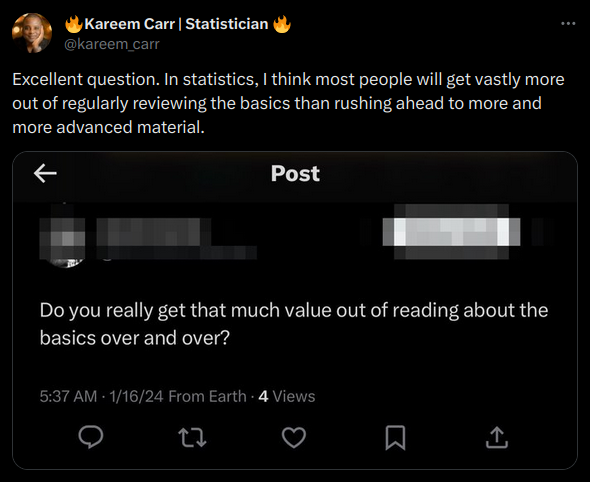

Introduction to PSCI 3200
Overview of the course
Agenda
- Introductions
- Course Description and Objectives
- Requirements
- Policies
- Schedule
- course website
- survey
Introductions
Me
Background:
- PhD from UPenn PSCI, Postdoc at Duke
- Very applied work
Interests:
- Democracy and civil society, foreign aid and NGOs
- Randomized experiments, machine learning
- Field Projects: Uganda, Ethiopia, Cambodia, Serbia
You
Please tell us:
- Name, Year, Major
- One thing you’re interested in
- One thing you’d like to get from the course
Course Description and Objectives
Course Description
- Blending subject-matter, research methods, and computational tools
- Focusing on the type of work that goes on with and within development agencies
- Almost no math; very little theory

- Best suited for folks that have small background in all 3 areas
Course Description
- Follow-up to PSCI 1102
- 1102 covered big academic debates that we won’t (ex. institutions vs geography)
- This research is the domain of academics conducting basic research
- Focus on applied research with development agencies/industry
- We can’t change geography or airlift new institutions
- We can use insights from academic work to improve governance and wellbeing (malaria pills, institutional reforms)
- super applied work is based partly on big picture/theory/basic research, so we’ll see some of that too
- I’ll often focus on my own research because it’s highly applied and you can get a sense of what research looks like mid-stream
Course Description
- Substantive focus areas
- Democracy and Autocratization
- Migration
- Crime and Conflict
- Foreign Aid
- Climate change and adaptation
Course Description
- Methods:
- Deepen understanding of ‘workhorse’ statistical methods and research designs
- How these methods can be used to make inferences about population characteristics and causal relationships
- Tools
- Introduce the computational tools that are needed to implement these methods
- Software necessary to prepare professional documents and reproducible data analysis workflows
Course Objectives
At the end of the course you should be able to:
- Evaluate the quality of evidence in the development field
- Think clearly about how data can be used to learn about development and governance challenges
- Use tools for data analysis such as R, RStudio, Quarto, and GitHub
- Produce professional-quality documents that summarize original research
Requirements and Policies
Prerequisites
- Substance
- Big academic debates in development research (PSCI 1102)
- Methods and Tools (PSCI 1800)
- Basic familiarity with R and RStudio
- Basic knowledge of statistics/econometrics/data science
if you didn’t take 1102, talk with me; I can give you a copy of the syllabus
Textbook
- Data Analysis for Social Science: A Friendly and Practical Introduction (DSS)
- We will use DSS as a jumping-off point for this course
- Some of this material will be review
Grading
Performance in this class will be evaluated by according to performance on the following course requirements:
| Requirement | Percent of Final Grade |
|---|---|
| Quizzes (4) | 10% |
| Workshops (4) | 10% |
| Data Assignments (3) | 36% |
| Final Project (1) | 44% |
Quizzes
- On 4 randomly selected meetings, there will be a brief quiz
- If you paid any attention or did readings, you should get full credit
- One pre-approved absence allowed
Workshops
- 4 interactive, hands-on workshops working with diverse types of data, covering different statistical methods, or using new computational tools.
- Tools: Quarto, github
- Data: Survey data, text data, financial data
- Methods: Randomized and quasi-experiments, network analysis
- You will be required to submit a product demonstrating completion of the workshop
Data Assignments
- 3 data assignments designed to give you an opportunity to apply tools and methods discussed in readings, lectures, and workshops to data from the real world
- You will be required to submit your own code and write-up
| Data Assignment | Due Date |
|---|---|
| Assignment 1 | Feb 29th |
| Assignment 2 | Mar 21st |
| Assignment 3 | Apr 25th |
Final Project
- Data analysis project with data of your choosing
- Formulate a research question
- Find data that can help you answer that question
- Apply the tools and methods from this course
- Write-up analysis
- Produce a webpage to present your results for public consumption
Your final submission will be a publicly available webpage that contains: (1) a brief introduction to your research question and data; (2) a discussion of your research design, its assumptions, and threats to inference; (3) a visualization that describes your data; (4) a presentation of the results from a regression model (as a table or graph) and discussion of its implications for your research question; and (5) a discussion of the implications of your findings for development policy or practice, including the limitations of your analysis and suggestions for future research.
Final Project
| Milestone | Due Date |
|---|---|
| Create a GitHub repository | Feb 8th |
| Identify data source | Mar 5th |
| Submit proposal | Apr 2nd |
| Submit final project | May 2nd |
By April, I’ll give you a break-down of how the grading will be done
Policies
Late Submissions and Regrading
- Late submission of assignments
- penalty of 2 points for every day late
- except in documented cases of serious illness or family emergency
- Regrade request
- detailed write-up of your dispute
- Regrade of the entire assignment (might increase or decrease)
Use of AI Tools
- You are welcome to use generative AI tools
- It is important to gain experience integrating them into professional tasks
- AI tools frequently make errors and ‘hallucinate’ (journal articles, R functions, etc.)
- It is your responsibility to verify the information provided
- You must disclose your use of AI tools for assignments in the form of footnotes or citations
Electronic Devices
- Laptops will be required in class
- All other electronic devices should be silenced and hidden
- Please don’t make me devise consequences for violating this policy
Controversial Topics and Statements
- Diverse perspectives, experiences, and backgrounds are essential for effective development research and practice
- Contact me directly if you feel we’re not achieving an inclusive environment
- Students are required to treat one another with respect
- Engage with any evidence that challenges your prior beliefs
Academic Honesty
- Students are expected to follow the University of Pennsylvania’s Code of Academic Integrity
- Suspected violations will be referred to university administration for disciplinary action.